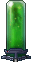

Доктор оторвал пациенту голову и сделал киборга, а мы смеёмся. Химик запер в коридоре пять человек и пустил газ, а мы смеёмся и требуем еще. Охранник, напившись, поймал и изнасиловал уборщика, а мы смеёмся и делаем скриншоты. Клоун взорвал генераторы и в потёмках передушил половину персонала, а мы смеёмся и восторженно аплодируем. Насилие, убийства, шахиды, забивание насмерть библией, мы смеёмся, погибаем и смеёмся, разрушаем и смеёмся. Нам насрать на задачи, насрать на администрацию, насрать на всех, даже на самих себя.
Мы — суть человечества. Мы — персонал Космической Станции №13!
Установка лаунчера
- Скачать лаунчер можно на официальном сайте. Скачиваем и устанавливаем последнюю версию Byond для Windows. Если у вас Mac или Linux, инструкция будет ниже.
- Далее создаём аккаунт на всё том же официальном сайте.